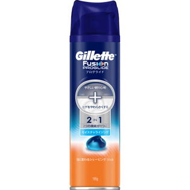

返回列表
产品名称：ジレット フュージョン プログライドジェルフォーム

Ｐ＆Ｇジャパン ジレット フュージョン プログライドジェルフォーム １９５ｇ
メーカー Ｐ＆Ｇジャパン
JANコード 7702018081004
商品の特徴
ジレット史上最高の滑らかさを実現したシェービングジェルです。
水をよく保持するタイプのポリマーを従来製品の３倍※近く配合しているので、極薄の膜が肌をコーティングします。（※P＆G調べ）
成分・分量
用法及び用量